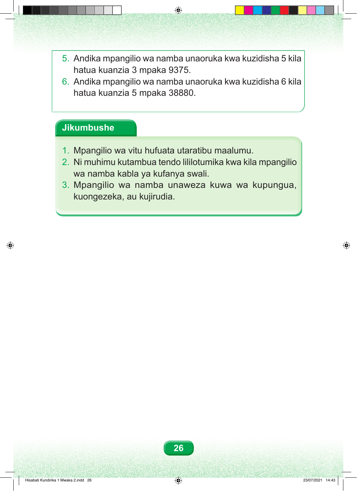

5. Andika mpangilio wa namba unaoruka kwa kuzidisha 5 kila hatua kuanzia 3 mpaka 9375. 6. Andika mpangilio wa namba unaoruka kwa kuzidisha 6 kila hatua kuanzia 5 mpaka 38880. Jikumbushe 1. Mpangilio wa vitu hufuata utaratibu maalumu. 2. Ni muhimu kutambua tendo lililotumika kwa kila mpangilio wa namba kabla ya kufanya swali. 3. Mpangilio wa namba unaweza kuwa wa kupungua, kuongezeka, au kujirudia. 26 Hisabati Kundirika 1 Mwaka 2.indd 26 23/07/2021 14:43